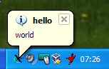
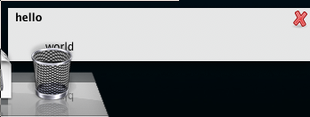

This feature allows server side applications to send system notifications (aka notifications bubbles) to the client.
It is supported on all platforms and controlled by the
notifications configuration option.
python-notify or
python-dbus (the exact name of the packages required
vary)MS Windows XP:

MacOS 10.10.x:

Gnome-shell:
Please refer to the
notifications subsystem.
-d notify,dbusxpra control :100 send-notification "hello" "world" "*"